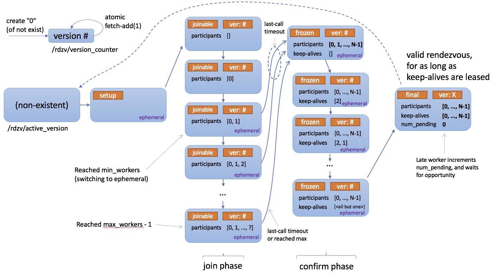

Rendezvous#
In the context of Torch Distributed Elastic we use the term rendezvous to refer to a particular functionality that combines a distributed synchronization primitive with peer discovery.
It is used by Torch Distributed Elastic to gather participants of a training job (i.e. nodes) such that they all agree on the same list of participants and everyone’s roles, as well as make a consistent collective decision on when training can begin/resume.
Torch Distributed Elastic rendezvous provides the following critical functionalities:
Barrier:
Nodes performing rendezvous will all block until the rendezvous is considered
complete - this happens when at least min total number of nodes have joined
the rendezvous barrier (for the same job). This also implies the barrier is not
necessarily of fixed size.
There’s an additional small waiting time after reaching min number of
nodes - this is used to ensure the rendezvous is not completed “too quickly”
(which could potentially exclude additional nodes attempting to join at
approximately the same time).
If max number of nodes is gathered at the barrier, the rendezvous is
completed immediately.
There’s also an overall timeout which causes the rendezvous to fail if min
number of nodes is never reached - this is meant to be a simple fail-safe to
help release partially allocated job resources, in case there’s a problem with
the resource manager, and is meant to be interpreted as non-retryable.
Exclusivity:
A simple distributed barrier would not be sufficient, as we also need to ensure that only one group of nodes exists at any given time (for a given job). In other words, new nodes (i.e. joining late) should not be able to form a parallel independent group of workers for the same job.
Torch Distributed Elastic rendezvous ensures that if a group of nodes has already completed a rendezvous (and hence might already be training), then additional “late” nodes attempting to rendezvous will only announce themselves as waiting, and will have to wait until the (previously completed) existing rendezvous is destroyed first.
Consistency:
When a rendezvous is completed, all its members will agree on the job membership and everyone’s role in it. This role is represented using an integer, called rank, that is between between 0 and world size.
Note that ranks are not stable, in the sense that the same node can be assigned a different rank in the next (re-)rendezvous.
Fault-tolerance:
Torch Distributed Elastic rendezvous is designed to tolerate node failures during the rendezvous process. Should a process crash (or lose network connectivity, etc), between joining the rendezvous and it being completed, then a re-rendezvous with remaining healthy nodes will happen automatically.
A node can also fail after it has completed (or has been observered by other
nodes to have completed) the rendezvous - this scenario will be handled by the
Torch Distributed Elastic train_loop instead (where it will also trigger a
re-rendezvous).
Shared key-value store:
When the rendezvous is completed, a shared key-value store is created and
returned. This store implements a torch.distributed.Store API (see
distributed communication docs).
This store is only shared by the members of the completed rendezvous. It is intended to be used by Torch Distributed Elastic to exchange information necessary to initialize job control and data-planes.
Waiting workers and rendezvous closing:
Torch Distributed Elastic rendezvous handler object provides additional functionalities, which are technically not part of the rendezvous process:
Querying how many workers arrived late at the barrier, who can participate in next rendezvous.
Setting the rendezvous closed to signal all nodes not to participate in next rendezvous.
DynamicRendezvousHandler:
Torch Distributed Elastic comes with the DynamicRendezvousHandler
class that implements the rendezvous mechanism described above. It is a backend-
agnostic type that expects a particular RendezvousBackend instance
to be specified during construction.
Torch distributed users can either implement their own backend type or use one of the following implementations that come with PyTorch:
C10dRendezvousBackend: Uses a C10d store (by defaultTCPStore) as the rendezvous backend. The main advantage of using a C10d store is that it requires no 3rd-party dependency (such as etcd) to establish a rendezvous.EtcdRendezvousBackend: Supersedes the legacyEtcdRendezvousHandlerclass. Passing anEtcdRendezvousBackendinstance toDynamicRendezvousHandleris functionally equivalent to instantiating anEtcdRendezvousHandler.store = TCPStore("localhost") backend = C10dRendezvousBackend(store, "my_run_id") rdzv_handler = DynamicRendezvousHandler.from_backend( run_id="my_run_id", store=store, backend=backend, min_nodes=2, max_nodes=4 )
Below is a state diagram describing how rendezvous works.
Registry#
- class torch.distributed.elastic.rendezvous.RendezvousParameters(backend, endpoint, run_id, min_nodes, max_nodes, local_addr=None, **kwargs)[source][source]#
Hold the parameters to construct a
RendezvousHandler.- Parameters:
backend (str) – The name of the backend to use to handle the rendezvous.
endpoint (str) – The endpoint of the rendezvous, usually in form <hostname>[:<port>].
run_id (str) – The id of the rendezvous.
min_nodes (int) – The minimum number of nodes to admit to the rendezvous.
max_nodes (int) – The maximum number of nodes to admit to the rendezvous.
local_addr (str | None) – The address of the local node.
**kwargs – Additional parameters for the specified backend.
- get(key, default=None)[source][source]#
Return the value for
keyifkeyexists, elsedefault.- Return type:
- class torch.distributed.elastic.rendezvous.RendezvousHandlerRegistry[source][source]#
Represent a registry of
RendezvousHandlerbackends.
Handler#
- class torch.distributed.elastic.rendezvous.RendezvousHandler[source][source]#
Main rendezvous interface.
Note
Distributed Torch users normally do not need to implement their own
RendezvousHandler. An implementation based on C10d Store is already provided, and is recommended for most users.- abstract get_run_id()[source][source]#
Return the run id of the rendezvous.
The run id is a user-defined id that uniquely identifies an instance of a distributed application. It typically maps to a job id and is used to allow nodes to join the correct distributed application.
- Return type:
- abstract is_closed()[source][source]#
Check whether the rendezvous has been closed.
A closed rendezvous means all future attempts to re-rendezvous within same job will fail.
is_closed()andset_closed()have semantics of eventual propagation and should not be used for synchronization. The intention is that if at least one node decides the job is finished, it will close the rendezvous, and other nodes will soon observe this and stop running as well.- Return type:
- abstract next_rendezvous()[source][source]#
Main entry-point into the rendezvous barrier.
Blocks until the rendezvous is complete and the current process is included in the formed worker group, or a timeout occurs, or the rendezvous was marked closed.
- Returns:
Instance of
RendezvousInfo.- Raises:
RendezvousClosedError – The rendezvous is closed.
RendezvousConnectionError – The connection to the rendezvous backend has failed.
RendezvousStateError – The rendezvous state is corrupt.
RendezvousTimeoutError – The rendezvous did not complete on time.
- Return type:
- abstract num_nodes_waiting()[source][source]#
Return the number of nodes who arrived late at the rendezvous barrier, hence were not included in the current worker group.
Callers should periodically call this method to check whether new nodes are waiting to join the job and if so admit them by calling
next_rendezvous()(re-rendezvous).- Return type:
- abstract shutdown()[source][source]#
Close all resources that were open for the rendezvous.
Example:
rdzv_handler = ... try: store, rank, world_size = rdzv_handler.next_rendezvous() finally: rdzv_handler.shutdown()
- Return type:
- property use_agent_store: bool#
Indicates that store reference returned by
next_rendezvous()can be shared with user applications and will be available during application lifecyle.Rendezous handler impl will share store details as instance of
RendezvousStoreInfo. Applications as a convention use MASTER_ADDR/MASTER_PORT env variables to lookup the store.
Dataclasses#
- class torch.distributed.elastic.rendezvous.RendezvousInfo(store, rank, world_size, bootstrap_store_info)[source][source]#
Holds the information about the rendezvous.
- class torch.distributed.elastic.rendezvous.api.RendezvousStoreInfo(master_addr, master_port)[source][source]#
Store address and port that can be used to bootstrap trainer distributed comms
Exceptions#
- class torch.distributed.elastic.rendezvous.api.RendezvousError[source][source]#
Represents the base type for rendezvous errors.
- class torch.distributed.elastic.rendezvous.api.RendezvousClosedError[source][source]#
Raised when a rendezvous is closed.
- class torch.distributed.elastic.rendezvous.api.RendezvousTimeoutError[source][source]#
Raised when a rendezvous did not complete on time.
- class torch.distributed.elastic.rendezvous.api.RendezvousConnectionError[source][source]#
Raised when the connection to a rendezvous backend has failed.
Implementations#
Dynamic Rendezvous#
- torch.distributed.elastic.rendezvous.dynamic_rendezvous.create_handler(store, backend, params)[source][source]#
Create a new
DynamicRendezvousHandlerfrom the specified parameters.- Parameters:
store (Store) – The C10d store to return as part of the rendezvous.
backend (RendezvousBackend) – The backend to use to hold the rendezvous state.
- Return type:
Parameter
Description
join_timeout
The total time, in seconds, within which the rendezvous is expected to complete. Defaults to 600 seconds.
last_call_timeout
An additional wait amount, in seconds, before completing the rendezvous once the minimum number of nodes has been reached. Defaults to 30 seconds.
close_timeout
The time, in seconds, within which the rendezvous is expected to close after a call to
RendezvousHandler.set_closed()orRendezvousHandler.shutdown(). Defaults to 30 seconds.
- class torch.distributed.elastic.rendezvous.dynamic_rendezvous.DynamicRendezvousHandler[source][source]#
Represent a handler that sets up a rendezvous among a set of nodes.
- classmethod from_backend(run_id, store, backend, min_nodes, max_nodes, local_addr=None, timeout=None)[source][source]#
Create a new
DynamicRendezvousHandler.- Parameters:
run_id (str) – The run id of the rendezvous.
store (Store) – The C10d store to return as part of the rendezvous.
backend (RendezvousBackend) – The backend to use to hold the rendezvous state.
min_nodes (int) – The minimum number of nodes to admit to the rendezvous.
max_nodes (int) – The maximum number of nodes to admit to the rendezvous.
local_addr (str | None) – The local node address.
timeout (RendezvousTimeout | None) – The timeout configuration of the rendezvous.
- class torch.distributed.elastic.rendezvous.dynamic_rendezvous.RendezvousBackend[source][source]#
Represent a backend that holds the rendezvous state.
- abstract get_state()[source][source]#
Get the rendezvous state.
- Returns:
A tuple of the encoded rendezvous state and its fencing token or
Noneif no state is found in the backend.- Raises:
RendezvousConnectionError – The connection to the backend has failed.
RendezvousStateError – The rendezvous state is corrupt.
- Return type:
- abstract set_state(state, token=None)[source][source]#
Set the rendezvous state.
The new rendezvous state is set conditionally:
If the specified
tokenmatches the fencing token stored in the backend, the state will be updated. The new state will be returned to the caller along with its fencing token.If the specified
tokendoes not match the fencing token stored in the backend, the state won’t be updated; instead the existing state along with its fencing token will be returned to the caller.If the specified
tokenisNone, the new state will be set only if there is no existing state in the backend. Either the new state or the existing state along with its fencing token will be returned to the caller.
- Parameters:
state (bytes) – The encoded rendezvous state.
token (Any | None) – An optional fencing token that was retrieved by a previous call to
get_state()orset_state().
- Returns:
A tuple of the serialized rendezvous state, its fencing token, and a boolean value indicating whether our set attempt succeeded.
- Raises:
RendezvousConnectionError – The connection to the backend has failed.
RendezvousStateError – The rendezvous state is corrupt.
- Return type:
- class torch.distributed.elastic.rendezvous.dynamic_rendezvous.RendezvousTimeout(join=None, last_call=None, close=None, heartbeat=None)[source][source]#
Hold the timeout configuration of a rendezvous.
- Parameters:
join (timedelta | None) – The time within which the rendezvous is expected to complete.
last_call (timedelta | None) – An additional wait amount before completing the rendezvous once the rendezvous has the minimum number of required participants.
close (timedelta | None) – The time within which the rendezvous is expected to close after a call to
RendezvousHandler.set_closed()orRendezvousHandler.shutdown().keep_alive – The time within which a keep-alive heartbeat is expected to complete.
C10d Backend#
- torch.distributed.elastic.rendezvous.c10d_rendezvous_backend.create_backend(params)[source][source]#
Create a new
C10dRendezvousBackendfrom the specified parameters.Parameter
Description
store_type
The type of the C10d store. The currently supported types are “tcp” and “file” which correspond to
torch.distributed.TCPStoreandtorch.distributed.FileStore, respectively. Defaults to “tcp”.read_timeout
The read timeout, in seconds, for store operations. Defaults to 60 seconds.
Note this only applies to
torch.distributed.TCPStore. It is not relevant totorch.distributed.FileStorewhich does not take in timeout as a parameter.is_host
A boolean value indicating whether this backend instance will host the C10d store. If not specified it will be inferred heuristically by matching the hostname or the IP address of this machine against the specified rendezvous endpoint. Defaults to
None.Note that this configuration option only applies to
torch.distributed.TCPStore. In normal circumstances you can safely skip it; the only time when it is needed is if its value cannot be correctly determined (e.g. the rendezvous endpoint has a CNAME as the hostname or does not match the FQDN of the machine).- Return type:
- class torch.distributed.elastic.rendezvous.c10d_rendezvous_backend.C10dRendezvousBackend(store, run_id)[source][source]#
Represents a C10d-backed rendezvous backend.
- Parameters:
store (Store) – The
torch.distributed.Storeinstance to use to communicate with the C10d store.run_id (str) – The run id of the rendezvous.
Etcd Backend#
- torch.distributed.elastic.rendezvous.etcd_rendezvous_backend.create_backend(params)[source][source]#
Create a new
EtcdRendezvousBackendfrom the specified parameters.Parameter
Description
read_timeout
The read timeout, in seconds, for etcd operations. Defaults to 60 seconds.
protocol
The protocol to use to communicate with etcd. Valid values are “http” and “https”. Defaults to “http”.
ssl_cert
The path to the SSL client certificate to use along with HTTPS. Defaults to
None.ssl_cert_key
The path to the private key of the SSL client certificate to use along with HTTPS. Defaults to
None.ca_cert
The path to the rool SSL authority certificate. Defaults to
None.- Return type:
Etcd Rendezvous (Legacy)#
Warning
The DynamicRendezvousHandler class supersedes the EtcdRendezvousHandler
class, and is recommended for most users. EtcdRendezvousHandler is in
maintenance mode and will be deprecated in the future.
- class torch.distributed.elastic.rendezvous.etcd_rendezvous.EtcdRendezvousHandler(rdzv_impl, local_addr)[source][source]#
Implements a
torch.distributed.elastic.rendezvous.RendezvousHandlerinterface backed bytorch.distributed.elastic.rendezvous.etcd_rendezvous.EtcdRendezvous.EtcdRendezvousHandleruses a URL to configure the type of rendezvous to use and to pass implementation specific configurations to the rendezvous module. The basic etcd rendezvous configuration URL looks like the followingetcd://<etcd_address>:<port>/<job_id>?min_workers=<min_workers>&max_workers=<max_workers> # noqa: W605 -- example -- etcd://localhost:2379/1234?min_workers=1&max_workers=3
The URL above is interpreted as follows:
Use the rendezvous handler that is registered with the
etcdschemeThe
etcdendpoint to use islocalhost:2379job_id == 1234is used as the prefix in etcd (this allows one to share a common etcd server for multiple jobs so long as thejob_idsare guaranteed to be unique). Note that the job id can be any string (e.g. does not need to be a number) as long as it is unique.min_workers=1andmax_workers=3specifies a range for membership size - Torch Distributed Elastic starts running the job as long as the cluster size is greater than or equal tomin_workersand admits up tomax_workersinto the cluster.
Below are a full list of the parameters that can be passed to etcd rendezvous:
Parameter
Description
min_workers
minimum number of workers for the rendezvous to be valid
max_workers
maximum number of workers to admit
timeout
total timeout within which next_rendezvous is expected to succeed (default 600s)
last_call_timeout
additional wait amount (“last call”) after min number of workers has been reached (defaults to 30s)
etcd_prefix
path prefix (from etcd root), inside which all etcd nodes will be created (defaults to
/torchelastic/p2p)
Etcd Store#
The EtcdStore is the C10d Store instance type returned by
next_rendezvous() when etcd is used as the rendezvous backend.
- class torch.distributed.elastic.rendezvous.etcd_store.EtcdStore(etcd_client, etcd_store_prefix, timeout=None)[source][source]#
Implement a c10 Store interface by piggybacking on the rendezvous etcd instance.
This is the store object returned by
EtcdRendezvous.- add(key, num)[source][source]#
Atomically increment a value by an integer amount.
The integer is represented as a string using base 10. If key is not present, a default value of
0will be assumed.- Returns:
the new (incremented) value
- Return type:
- check(keys)[source][source]#
Check if all of the keys are immediately present (without waiting).
- Return type:
- get(key)[source][source]#
Get a value by key, possibly doing a blocking wait.
If key is not immediately present, will do a blocking wait for at most
timeoutduration or until the key is published.- Returns:
value
(bytes)- Raises:
LookupError - If key still not published after timeout –
- Return type:
Etcd Server#
The EtcdServer is a convenience class that makes it easy for you to
start and stop an etcd server on a subprocess. This is useful for testing
or single-node (multi-worker) deployments where manually setting up an
etcd server on the side is cumbersome.
Warning
For production and multi-node deployments please consider properly deploying a highly available etcd server as this is the single point of failure for your distributed jobs.
- class torch.distributed.elastic.rendezvous.etcd_server.EtcdServer(data_dir=None)[source][source]#
Note
tested on etcd server v3.4.3.
Starts and stops a local standalone etcd server on a random free port. Useful for single node, multi-worker launches or testing, where a sidecar etcd server is more convenient than having to separately setup an etcd server.
This class registers a termination handler to shutdown the etcd subprocess on exit. This termination handler is NOT a substitute for calling the
stop()method.The following fallback mechanism is used to find the etcd binary:
Uses env var TORCHELASTIC_ETCD_BINARY_PATH
Uses
<this file root>/bin/etcdif one existsUses
etcdfromPATH
Usage
server = EtcdServer("/usr/bin/etcd", 2379, "/tmp/default.etcd") server.start() client = server.get_client() # use client server.stop()
- Parameters:
etcd_binary_path – path of etcd server binary (see above for fallback path)